When I joined Qubeek.io, I was new to UX and UI design. At first, I worked on small tasks and improvements, but later I got the chance to design a full service from scratch. It was my first serious experience creating internal B2B tools that were later implemented in real educational platforms and universities.
Duration: Dec 2021 – Jul 2022 (8 mos)
My Role: Junior UX/UI Designer
Platforms: Web
Redesign internal B2B tools at Qubeek.io — a platform provider for educational institutions — and design one full service from scratch, all shipped into real university deployments.
Key decisions
Educational environment: flexible program builder with a testing module, expert review dashboard and an admin overview — all adapted for large course volumes
Embedded chats: full-featured chat module designed from logic to visuals, supporting messages, attachments, statuses and team search
Text editor: block-based editor with drag-and-drop, all block states designed, typography and spacing controls in one sidebar
Result
3 full products updated, new tools designed and shipped. Solutions successfully integrated into real educational platforms and universities.
Qubeek.io builds digital solutions that can be easily deployed in the client's infrastructure. The company's internal products are standalone platforms with a wide API, built-in analytics and full isolation. But when I joined, many of them needed a redesign and UX improvements.
My Role
Improving the visual design and usability of interfaces;
Designing screens and features based on scenarios suggested by product managers;
Supporting both new and existing interfaces;
Preparing components and UI solutions for implementation;
Collaborating with developers and discussing feedback.
Challenges
Optimize the user experience in internal tools;
Take part in developing new modules and interfaces;
Improve visual clarity and ease of use across products.
What I Designed
Educational Environment
A platform for creating and filling educational programs with lessons and assignments. The flexible interface made it easy to scale and adapt the functionality for both short courses and full academic programs.
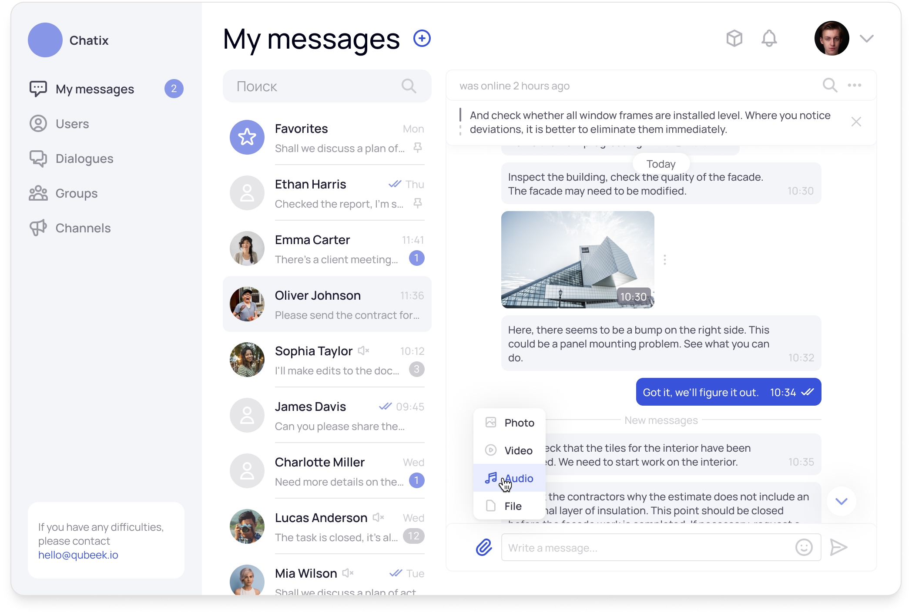
The testing module made it easy to create timed tasks with difficulty levels and media. I designed filtering and module-based sorting to simplify working with large courses.
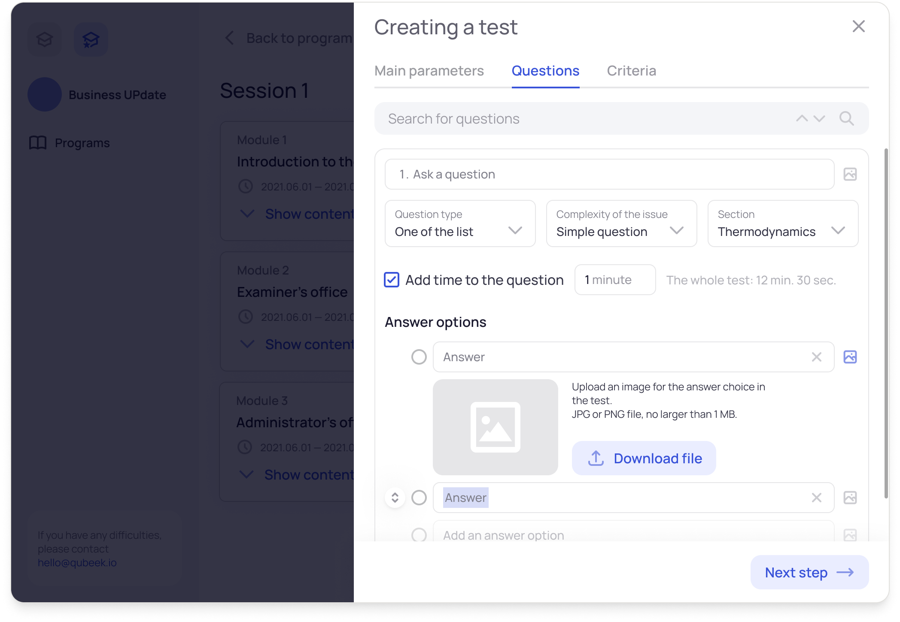
The test-taking interface is simple and clear. It includes illustrations, a timer, difficulty level and an attempt counter. I focused on readability and ease of use so that nothing would distract from the questions.
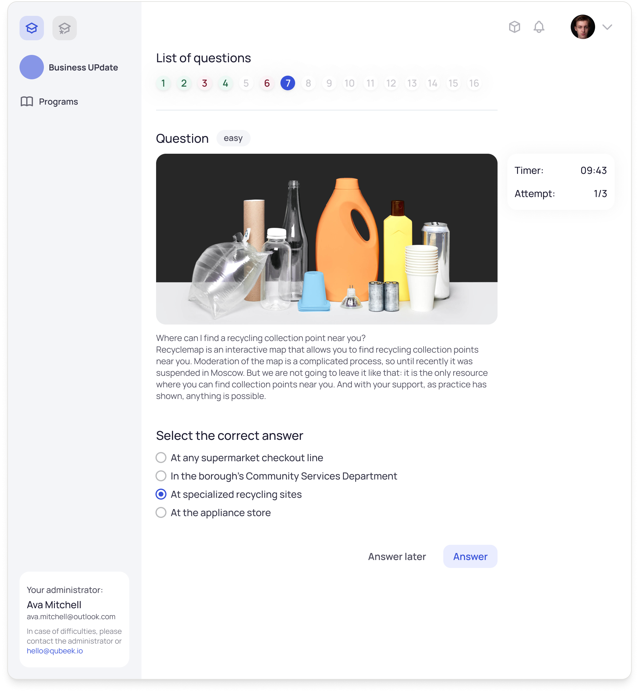
The expert dashboard is focused on fast assignment review. It shows how many submissions are pending, which ones were rejected and which programs had recent activity. Filters and sorting make it easier to navigate when there is a high volume.
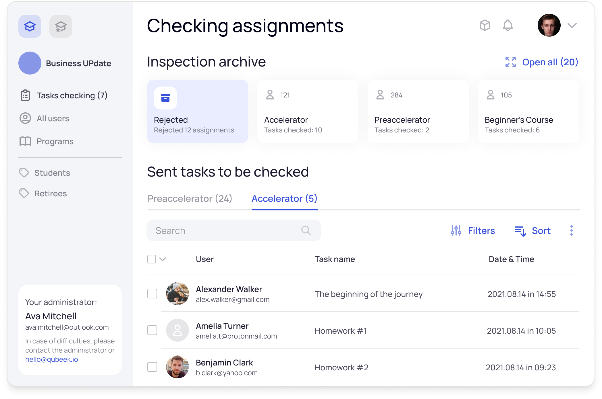
Program creation is a user-friendly workspace for administrators. Content is added with one click, the structure stays clear and can be easily edited.
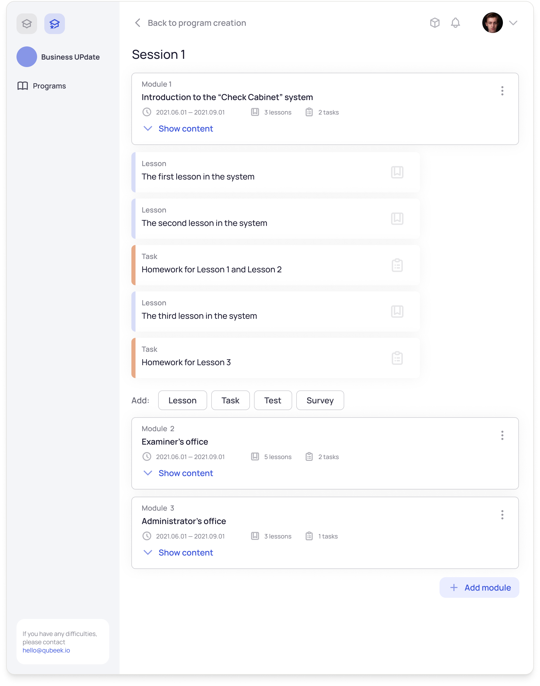
The administrator can see how many participants are in the program, who is online and how engagement is changing. Below that is the full course content. Everything is in one window for easy management and analysis.
The survey builder lets you set up questions, choose answer types, mark them as required and arrange the order of options. Everything can be edited right away without extra steps. The interface is simple and easy even for first-time users.
Embedded Chats
A full-featured chat solution with flexible settings that includes all the familiar functions of popular messengers.
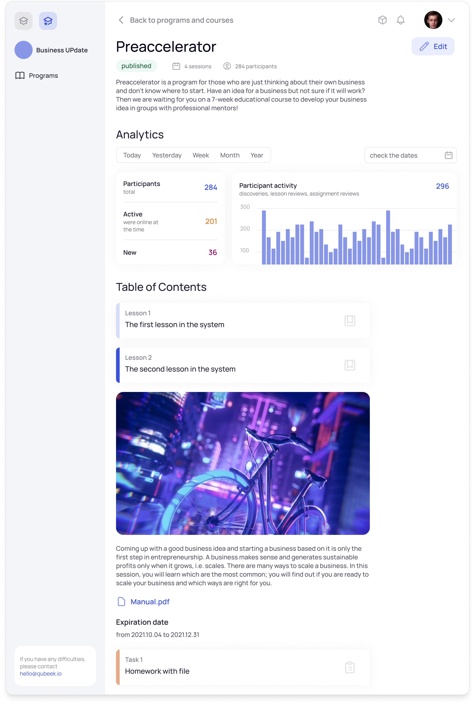
I designed the chat module from scratch, from logic to visuals. The interface feels familiar and easy to use, with quick access to notifications.
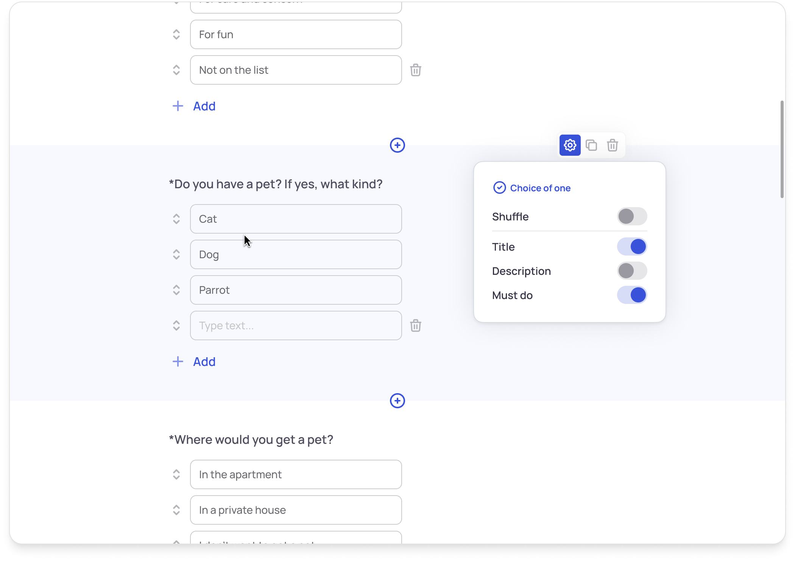
The chat supports all basic features: messages, attachments, statuses and quick replies. I focused on speed and simplicity so that nothing gets in the way of the task.
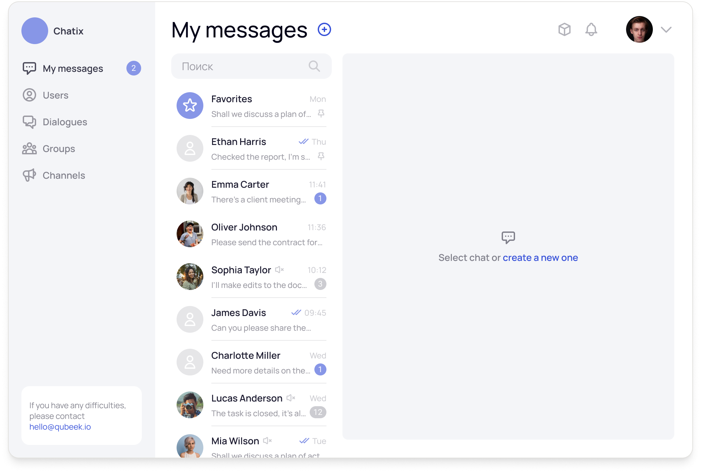
Chat creation is designed as a modal window with search and filters. I added activity previews to make it easier to choose participants in large teams.
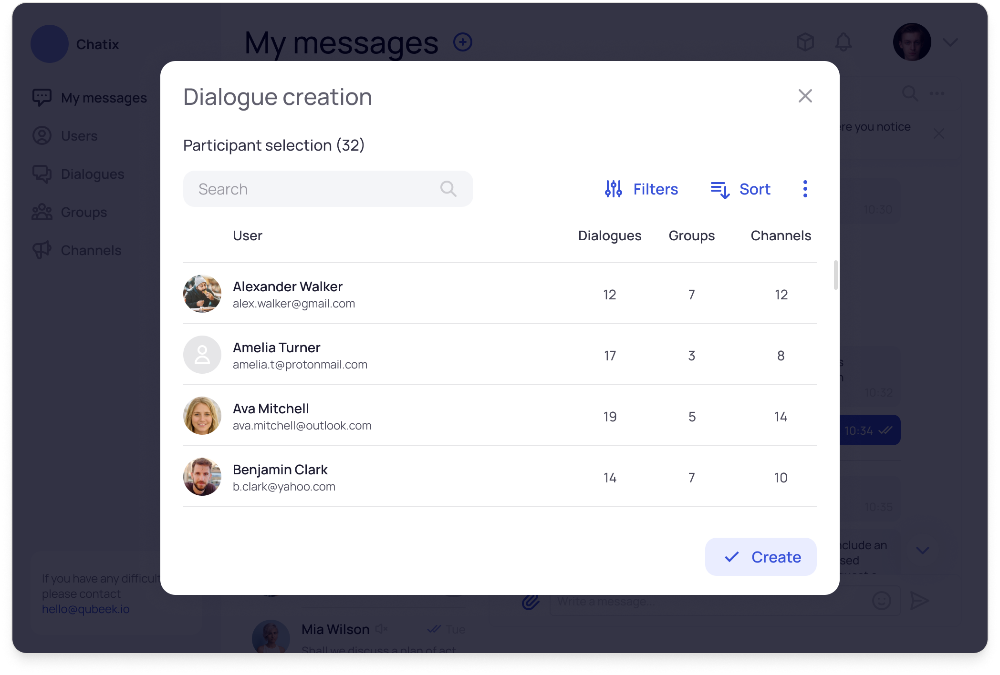
Text Editor
Allows you to create fullscreen materials with media files and easy layout in just a few minutes.
The editor lets you focus on the text without distractions. Blocks, images and formatting can be added with one click. The grid and drag-and-drop make it easy to use for any kind of content.
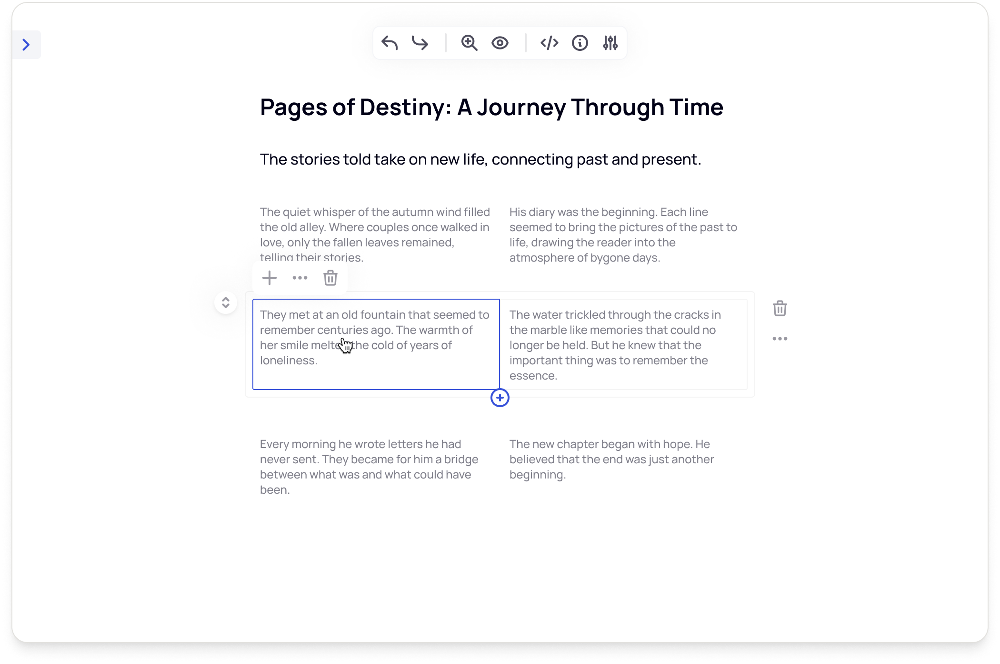
I designed all states of the text block — default, editing and dragging. This makes the interface easy to understand, reduces mistakes and helps users feel more confident.
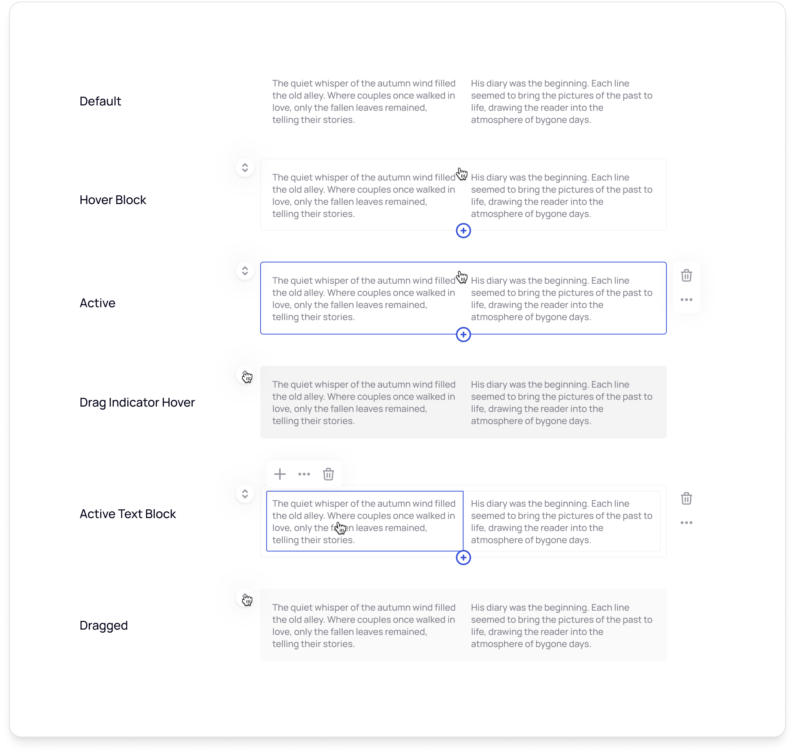
For each block, you can change the size, adjust the position, insert code or lock editing. All functions are available in one menu right inside the document.
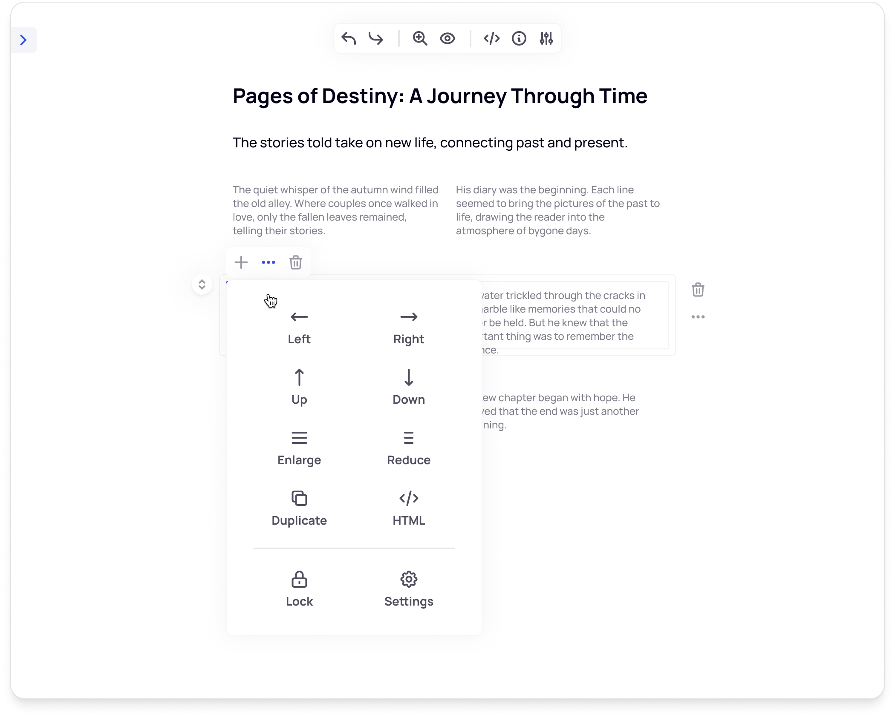
On the left is the block library, and on the right is a settings menu for typography, styles and spacing. This setup combines visual and detailed editing without overwhelming the user.
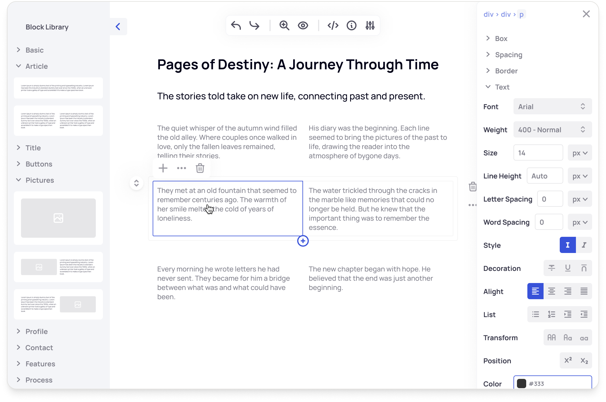
Additional Tools
In addition to full product solutions, I worked on building support tools — embedded features that help developers handle routine tasks more easily. This helps reduce costs and delivers polished functionality:
Tables and Filters — for managing data;
Spotlight search — for quick access to content;
Preview links — to help navigate the system;
Flowcharts — for building logical structures with actions, conditions and branches. I added standard elements, zoom and a mini map. The tool works well for both interface planning and business processes.
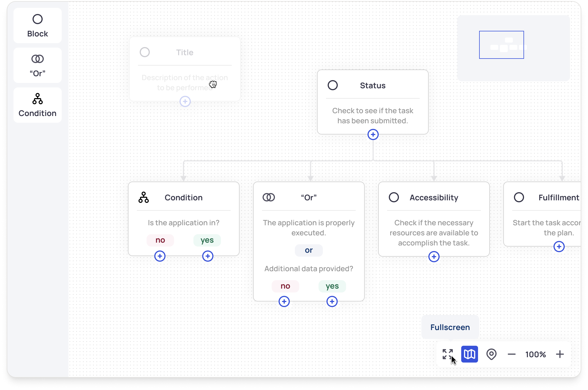
What I did
Took part in analyzing competitors and solving UI challenges;
Created layouts and screens based on requirements;
Focused on visual clarity and consistency across components;
Supported interface implementation and checked the final result in development.
Results
3 full products were updated;
New tools were designed and implemented, including chats, an editor and flowcharts;
The visual language and interfaces were improved;
The solutions were successfully integrated into real educational platforms.
My Learnings
Moved from making edits to working independently on projects;
Gained confidence in UI design;
Learned how to adapt design to an existing technical base;
Got better at discussing visual decisions clearly;
Realized the importance of systems thinking even in small tasks.
Closing Thoughts
Working at Qubeek.io was an important step for me. It was the first time I truly felt confident in myself as a designer. These internal products weren't public, but they helped other platforms run better. I'm proud to have contributed to them and to have been part of a team focused on constant improvement.